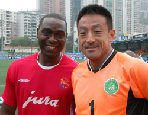
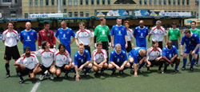
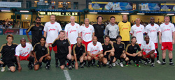
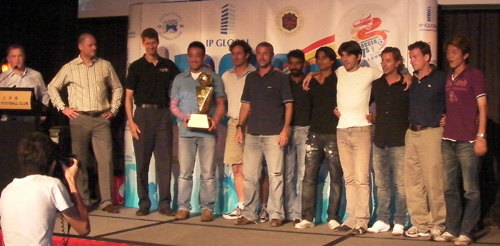

|
Hong Kong Football Club, Weekend 15/16th May.
(Tournament website here)
KFC Tokyo, organized by former TML Swiss Kickers Captain Kirk Neureiter went all the way walking away with the prestige cup in over 35 competitions.
The team consisted of 7 nationalities, Kirk shut down opponents best strikers, who teamed up with ex-professional Frenchman Frederic Rault and Hibs/Swiss TML great Rafael De Marchi in defense. Midfield was manned by Scotsman Martin Tierney, Malaysians Puva and Kuru, TML Swiss player Takahisa Suzuki, and Jason Bailey. Striker was an eventual competition MVP David Serene, also an ex-pro, who was simply unstoppable all day. Hitoshi in goal was impressed what he had in front of him, it made his job rather easy.
Field of 16 teams (4 groups) included English international team with Andy Cole, IP Global All Stars also wih ex-premiership pros, Southampton Lloyds TSB All Stars, Nottingham Forest Mobsters, Galliic All Stars with ex-French internationals, Team Bondi with former A-league players; other teams mostly had ex-pros from Asia .
All Sounds impressive on paper but so what? Game on.
In day 1 & 2,
In group stage competition KFC Tokyo finished 2nd in group C. Tied 1-1 against eventual plate winner Team Bondi in first match, second match another tie 0-0 against star studded IP Global All Stars, and in third match won 1-0 to Yau Yee Select Veterans. Strategy of the day was not to lose, keep ball possessions, and keeping the shape of defense then attack and support when you see the opportunity comes.

In day 3,
Cup Quarter Final KFC Tokyo faced SCC Tigers from Singapore . KFC Tokyo played their strategy to death, slowing down the game, kept ball possession, then attacked wisely.
A neat build up to David from the side of the box, who dribbled around a few SCC defenders and passed to overlapping Martin inside the box for a game winning goal. KFC Tokyo sealed victory 1-0.
Semi-Final: KFC Tokyo faced ‘Art Gallery’ team; a joint team of two HK clubs basically was a full HK ex-internationals. Probably was a most fit team in competition, KFC Tokyo had to face heavy pressure as Art Gallery created multiple chances off hard running in sweltering Hong Kong heat. Fending off multiple attacks in regulation 0-0, a match went to overtime, which is decided with 4 on 4 on the pitch for 5 munities on sudden-death goal. Captain Kirk shoved over Hitoshi to take over Goalkeeping duty. Once overtime started, Kirk decided to take the ball all the way to other end, then scored himself a game winner from inside of SCC’s 6 yard box.
Final match was against sponsored team Andy Cole Jura All Stars that featured former premiership/international greats Andy Cole, Frank Sinclair, Michael Thomas, David May and Ian Walker. Others on the team had similar professional resume, 7 players were FA cup winners. Match was extended to 10 minutes halfs from 7 minutes, making this match an extra hard for both teams.
Match was broadcasted live in Hong Kong TV, a guest commentator was premiership broadcast match caller John Motson.
Packed audience at HKFC ground looking on expecting all stars to win easily, but KFC Tokyo never forgot the mission, knew very well that upset was possible.
Even after Andy Cole’s lucky strike past Kirk and the keeper opened the match 0-1, KFC Tokyo came back with Puva’s 25 yard top corner thunderous magic strike beating ex England keeper Ian Walker.
KFC Tokyo striker David Serene in particular knew he had a point to prove. He took on ex-Chelsea great Frank Sinclair, one particular moment David crossed Sinclair over dribbling around him a few times from middle of the pitch all the way down to the edge of the box, to just make his legs twisted up and fall over in front of everyone watching, then scored an amazing goal past Walker. 2-1 to the good guys from Tokyo . Crowd cheered wildly for David’s awesome performance, also half of them (and yours truly) laughed at Sinclair falling over like a …..
After going up 2-1, KFC Tokyo then smartly kept the ball from arrogant and frustrated ex-pros. Crowd booed Andy Cole and his teammates as they started to get frustrated and start fouling KFC Tokyo players. Tournament MVP David Serene decided to show off his skill a few more times for entertainment and put shame onto Frank Sinclair the rest of the game. Refusing to be embarrassed further, Sinclair did what he could only do to slow down David by tackling hard twice. Premier League referee Martin Atkinson quickly gave out yellow and red card. Crowd at HKFC ground gave him mixture of boos and applauding as he left the pitch in shame.
KFC had to only keep the ball away from one-man down, supposedly easily winning but tired all-star team.
KFC Tokyo passed the ball around as Andy Cole and other mega superstars chased around KFC Tokyo coming up empty.
David even came close to third goal, as final minute approached crowd cheered KFC Tokyo for an upset. Superstars blamed each others on the pitch.

Captain Kirk on interview:
“We’re very happy, we’ve been coming to the Soccer Sevens for a long time so it’s nice to finally win a trophy,” said KFC Tokyo captain Kirk Neureiter. “We lost in the Plate final four years ago so to win the Cup this time, especially against a team containing so many great players, is just a fantastic feeling.”
It was great to take part in unbelievable tournament. Hope to repeat this experience in future.
Report by Hitoshi Ono
|